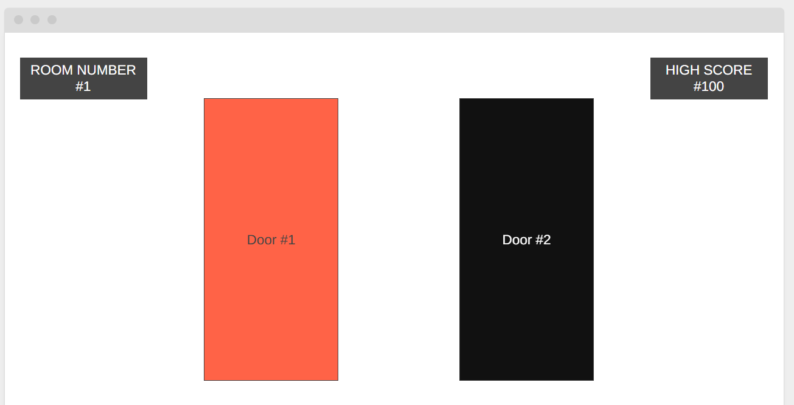

Overview
Purpose
This website is a quick and simple game about making random choices. Users are presented with a choice of two doors, where one ends their run and the other continues it.
Audience
This website is aimed at anyone wanting to play an easy game. Because this is a game of luck, it may be especially suitable for gamers who need a break from skill-based games.
Dynamic elements
JavaScript will be used to randomly determine which of the two doors is safe each round. Arrays will store the possible door images, and objects will be used to keep track of game data such as the current room and high score. Event listeners will detect when the player clicks a door, update the page using DOM manipulation, display the result, and either advance the player to the next room or end the game. Conditional statements will determine whether the player continues or loses, and the high score will be updated whenever a new record is reached.
Style Guide
Color Palette
Palette URL: https://coolors.co/e8c547-fe5d26-2d3047-cdd1c4| Primary | Secondary | Accent 1 | Accent 2 |
|---|---|---|---|
| [#CDD1C4] | [#2D3047] | [#E8C547] |
Pseudocode for your project
The website will initialize by displaying two doors and the room number (1) (the highscore will be invisible until they lose for the first time). It will then wait for the player to click on a door, then it will decide which door is safe. If the selected door is safe, it will increase the room number by 1 and display 2 new random doors. If the selected door leads to doom, it will send a "Game Over" alert, show their final room number (if this is the first time they lose, or if they beat their previous high score, then it will say "New High Score"), and display a button that allows them to restart. When the restart button is pressed, it will reset the room number, display the current high score in the corner, and show 2 new random doors.
Wireframes

Landing page
Before the user loses for the first time, the "High Score" box will not be visible.